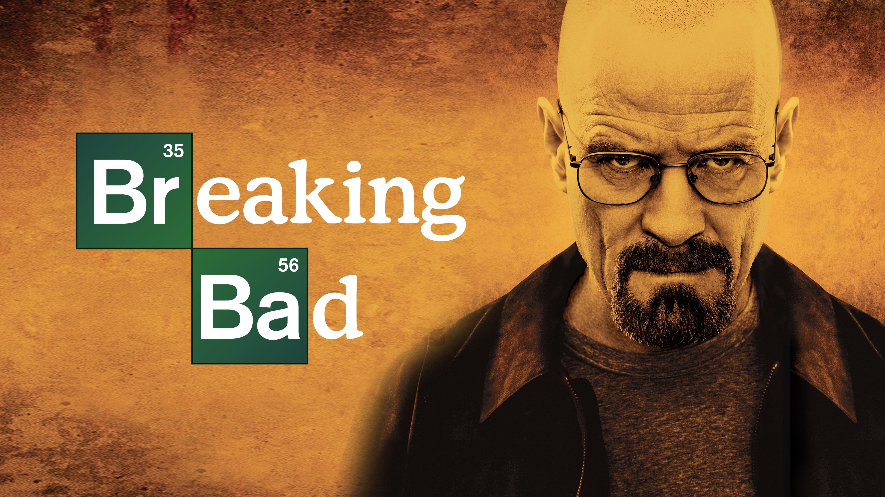

series que estou assistindo
breaking bad

A primeira temporada de Breaking Bad apresenta Walter White, um professor de química que descobre que tem câncer de pulmão. Para garantir o futuro financeiro de sua família, ele decide usar suas habilidades para produzir metanfetamina. Junto com um ex-aluno, Jesse Pinkman, Walter entra no mundo do tráfico de drogas. A temporada explora as dificuldades e dilemas morais que Walter enfrenta, assim como as consequências de suas escolhas. Ele luta contra o crime, a lei e suas próprias transformações pessoais, estabelecendo as bases para a escalada de conflitos nas temporadas seguintes.
a
dexter

Na primeira temporada de Dexter, conhecemos Dexter Morgan, um analista de sangue que trabalha para a polícia de Miami, mas também é um vigilante que mata criminosos que escaparam da justiça. Ele foi ensinado a controlar seus impulsos assassinos por seu pai adotivo, que era policial. A temporada se desenrola com Dexter lidando com sua vida dupla, enquanto investiga um serial killer conhecido como "Ice Truck Killer". A trama se aprofunda em seus relacionamentos e na luta interna entre sua natureza sombria e o desejo de levar uma vida normal.